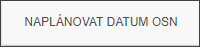
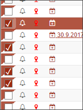

Naplánovat datUm OSN
Definice datumu osobní návštěvy znamená, že inspektor nastaví datum, kdy navštíví dlužníka na hlavní adrese spisu (Datum OSN).
Nastavení data OSN pro jeden spis se provádí pomocí ikony v seznamu spisů. Bližší informace jsou k ručnímu nastavení data OSN u jednotlivých spisů v kapitole Ruční nastavení data OSN.
Nastavení datumu OSN pro více spisů

Nastavení datumu OSN pro více spisů najednou lze pomocí tlačítka "NAPLÁNOVAT DATUM OSN" v seznamu akcí na pravé straně obrazovky.

Aby mohl uživatel tuto funkci použít, musí na začátku řádky (viz obrázek) zaškrtnutím vybrat spisy, u kterých chce nastavit Datum OSN.
Dialog výběru společného datumu OSN je stejný jako u ručního nastavení, pouze nebude zobrazené maximální datum OSN, protože každý z vybraných spisů může mít tento datum z centrály nastaven na jiný termín. Na skutečnost, že touto formou byla u určitého spisu porušena povinnost uskutečnit návštěvu do maximální termínu, je upozorněn uživatel hlášením v dialogovém okně a zároveň je vygenerována urgence. Uživatel může jednotlivě termín u každého spisu přeplánovat dle svých potřeb a možností.
Při větším výběru spisů může být uživatel upozorněn, že spis, na kterém stojí, není zaškrtnut a tedy není zahrnut do hromadné akce.